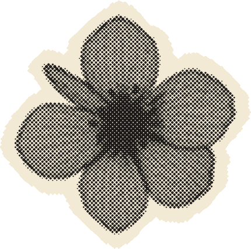
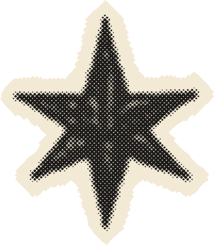
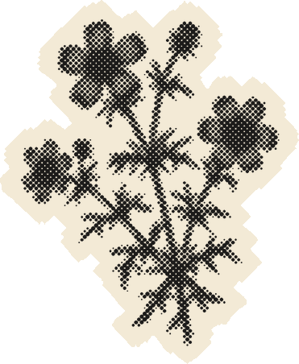
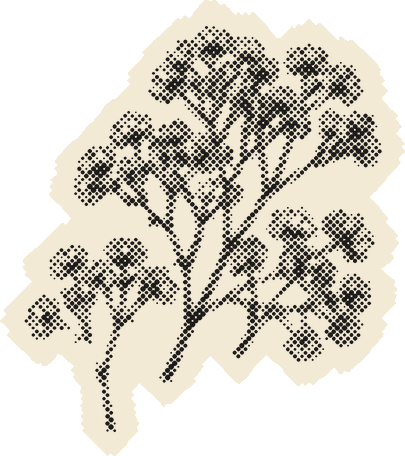

poetry lives everywhere around you. you just have to cultivate eyes that see it.

found poetry is poetry you gather instead of invent: a poem built from language that already exists in the world.
this is ordinary magic. words live in ordinary things all around us, all the time, and most days we walk right past them.
turn your attention toward them. look at the everyday with an eye full of curiosity, and the poetry that surrounds you starts to show itself.

collect words the way a naturalist collects specimens:
~ a tea box
~ junk mail
~ a receipt
~ an old paperback
~ a seed packet
~ something overheard
~ a text from a friend

take a page from an old letter, a magazine, or an old book. circle the words that stand out to you, then cross out, color or black out the rest. read the words you’ve collected out loud.
cut single words out of anything. spread them on the table. move them around until the lines start to hum. glue them down.
save poems from the blackout, scrap and drifting-word pages here, where they stay on this device, and save any card as an image to share.
write down three things people say around you today. break them into lines. don’t fix them. let the strangers be poets.

you are poetry on two feet, and this ordinary, sometimes challenging world, loves you.
you won’t notice that the cracks in the sidewalk fill with violets unless you slow down enough not to step on them.
so pick one ordinary thing today, and read it like a poem.
rainesillito.substack.com

if you want something more tangible to hold in your hand, you can purchase copies of my zines in my ko-fi luminarium store.